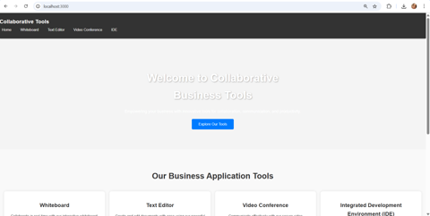
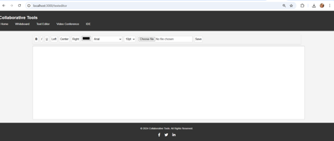
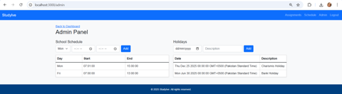
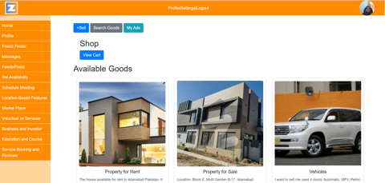
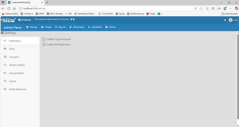
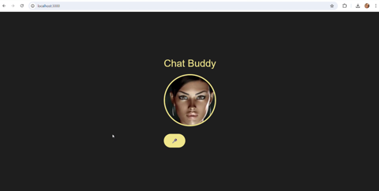
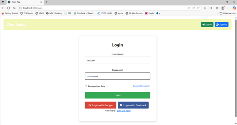
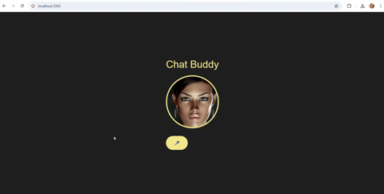
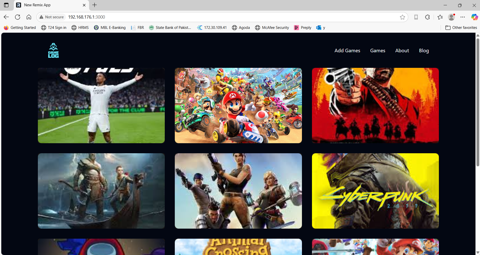
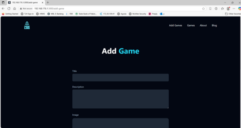

Sadaf Farooqi
Full Stack Developer & Computer Science Teacher
About Me
I am a full stack developer and computer science educator with over 4000 hours of global tutoring experience and development expertise in building real-time applications and collaborative platforms.
📧 sadaffarooqi95@hotmail.com | 📞 +923338015090
Projects
ZMZOM - Real-Time Social Platform
ZMZOM enables real-time messaging, video calling, post sharing with reactions, listing of goods and services, scheduling meetings, and friend finder based on location and interests.


StudyIve - Academic Organizer
StudyIve is a tool for students to manage their assignments, view due dates in an organized table, create personal schedules, and track task progress with report generation.


Online Collaborative Tools
This web platform integrates a rich text editor, whiteboard, video conferencing, and IDE features using EJS, Node.js, HTML, and CSS. It provides a seamless user experience for communication and productivity across remote teams.

Wekan - Self-Hosted Task Management
I explored open-source task management and deployed Wekan using Docker. The solution includes board creation, account management, and admin controls via MongoDB-backed containers.

Chat Buddy - Conversational AI Assistant
Chat Buddy is a React-based AI chatbot that integrates OpenAI API and Google Speech APIs. It enables voice interaction through a sleek UI and supports real-time AI communication.


GameLog - Game Catalog using Remix + Prisma
GameLog is a Remix-based full-stack application built with TailwindCSS and Prisma. It features a gallery of video games, metadata forms, and routing with SQLite backend.

